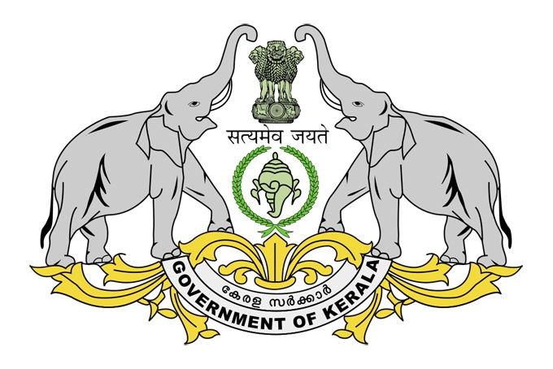

GOVERNMENT OF KERALA

The Government of Kerala, formally and commonly referred to as Kerala Government is the state government of the Indian state of Kerala.
The government is led by the chief minister (currently Pinarayi Vijayan, 25 May 2016), who selects all the other ministers.
The chief minister and their most senior ministers belong to the supreme decision-making committee, known as the cabinet.
Ministers of the Kerala Government are responsible to the Kerala Legislative Assembly; they make statements in the assembly and take questions from
membersof the assembly (the MLAs). The government is dependent on Kerala Legislative Assembly to make primary legislation. Legislative assembly elections
are held every five years to elect a new assembly, unless there is a successful vote of no confidence in the government or a two-thirds vote
for a snap election in the assembly, in which case an election may be held sooner. After an election, the Kerala governor (currently Arif Mohammad Khan)
selects as chief minister the leader of the party most likely to command the confidence of the assembly,
usually by possessing a majority of MLAs.